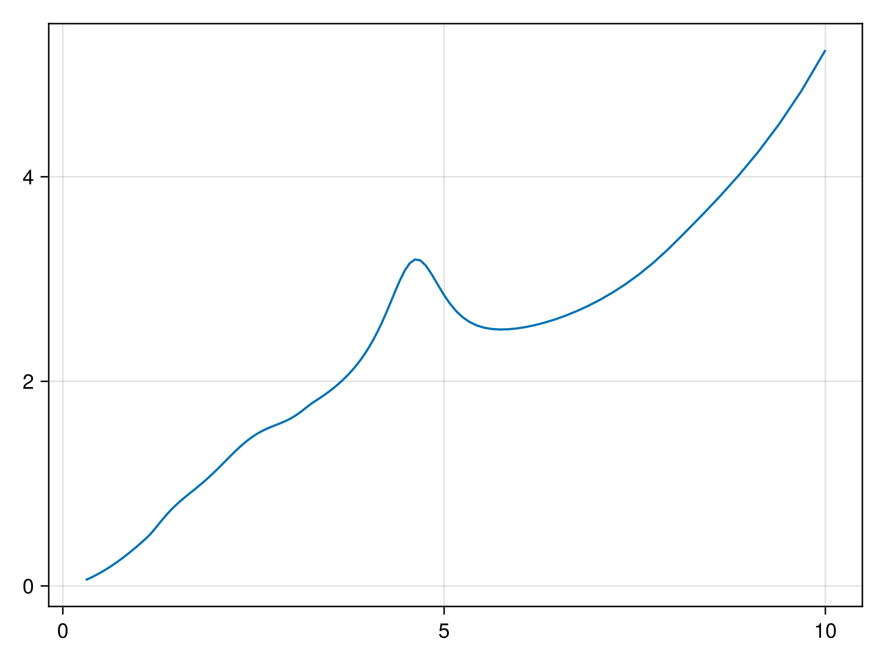
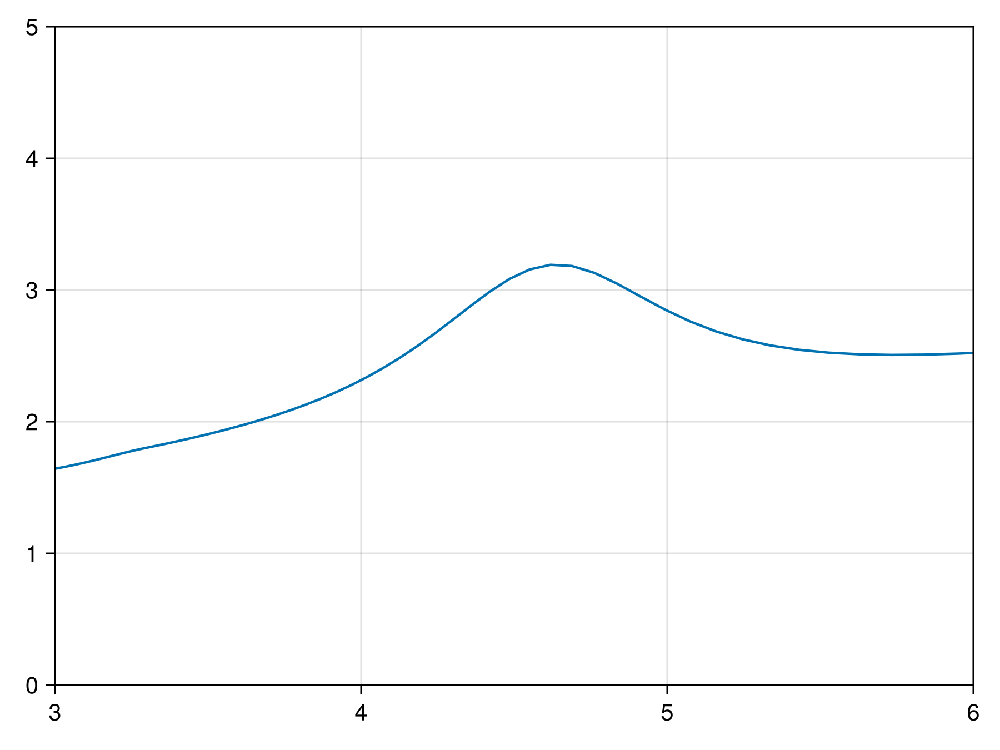
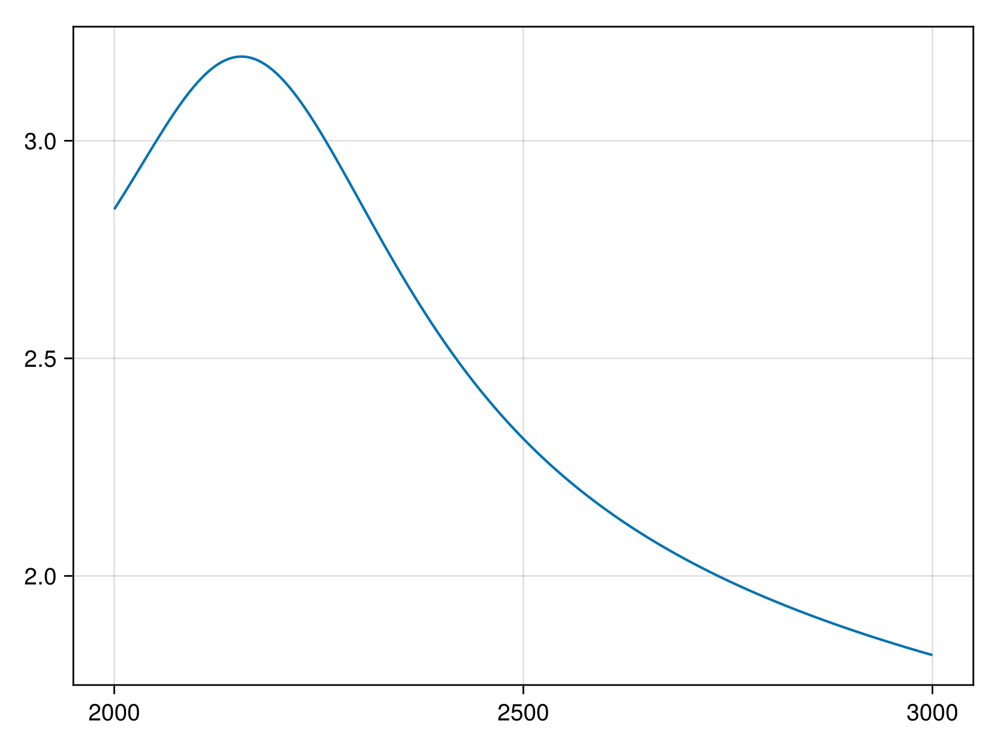
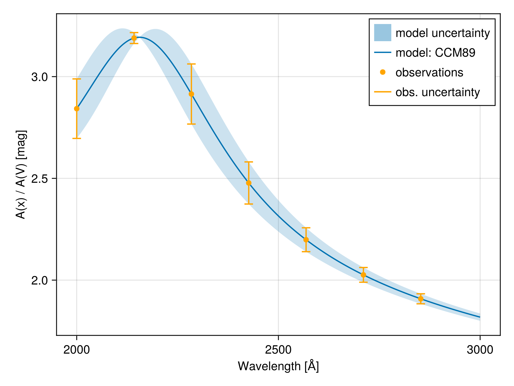

Plotting
DustExtinction.jl provides basic functionality for creating plots with Makie.jl, which can then be composed together to form more complex figures. Below are a few examples using the following primitives from Makie.jl: lines, scatter, and heatmap, along with their mutating equivalents.
By default, all plots adopt the axis limits defined by DustExtinction.checkbounds, but this is easily modified in the Makie figures.
Line plots
Makie's line and scatter plots work out-of-the box for all color laws, which can then be used to build up more complex plots.
using DustExtinction, CairoMakie
using DustExtinction: aa_to_invum
using Measurementswavs = let
x = range(2_000, 3_000; length=1_000)
x .± 1e5 * inv.(x)
end # Å1000-element Vector{Measurements.Measurement{Float64}}:
2000.0 ± 50.0
2001.0 ± 50.0
2002.0 ± 50.0
2003.0 ± 50.0
2004.0 ± 50.0
2005.0 ± 50.0
2006.0 ± 50.0
2007.0 ± 50.0
2008.0 ± 50.0
2009.0 ± 50.0
⋮
2992.0 ± 33.0
2993.0 ± 33.0
2994.0 ± 33.0
2995.0 ± 33.0
2996.0 ± 33.0
2997.0 ± 33.0
2998.0 ± 33.0
2999.0 ± 33.0
3000.0 ± 33.0invum = aa_to_invum.(wavs) # μm1000-element Vector{Measurements.Measurement{Float64}}:
5.0 ± 0.12
5.0 ± 0.12
5.0 ± 0.12
4.99 ± 0.12
4.99 ± 0.12
4.99 ± 0.12
4.99 ± 0.12
4.98 ± 0.12
4.98 ± 0.12
4.98 ± 0.12
⋮
3.342 ± 0.037
3.341 ± 0.037
3.34 ± 0.037
3.339 ± 0.037
3.338 ± 0.037
3.337 ± 0.037
3.336 ± 0.037
3.334 ± 0.037
3.333 ± 0.037model = CCM89()CCM89
Rv: Float64 3.1
lines(model)
lines(model; axis=(; limits=(3, 6, 0, 5)))
extinction = model.(wavs) # mag1000-element Vector{Measurements.Measurement{Float64}}:
2.84 ± 0.15
2.85 ± 0.15
2.85 ± 0.15
2.85 ± 0.15
2.85 ± 0.15
2.86 ± 0.15
2.86 ± 0.15
2.86 ± 0.15
2.87 ± 0.15
2.87 ± 0.15
⋮
1.822 ± 0.018
1.822 ± 0.018
1.821 ± 0.018
1.821 ± 0.018
1.82 ± 0.018
1.82 ± 0.018
1.819 ± 0.018
1.819 ± 0.018
1.818 ± 0.018lines(wavs, extinction)
wavs_sampled, extinction_sampled = let
N_samples = 7
wavs[range(begin, step=end ÷ N_samples; length=N_samples)],
extinction[range(begin, step=end ÷ N_samples; length=N_samples)]
end(Measurements.Measurement{Float64}[2000.0 ± 50.0, 2142.0 ± 47.0, 2284.0 ± 44.0, 2426.0 ± 41.0, 2569.0 ± 39.0, 2711.0 ± 37.0, 2853.0 ± 35.0], Measurements.Measurement{Float64}[2.84 ± 0.15, 3.19 ± 0.027, 2.91 ± 0.15, 2.48 ± 0.1, 2.199 ± 0.059, 2.026 ± 0.036, 1.908 ± 0.025])fig, ax, p = band(wavs, extinction; alpha=0.5, label="model uncertainty")
lines!(ax, wavs, extinction; label="model: CCM89")
scatter!(ax, wavs_sampled, extinction_sampled; color=:orange, label="observations")
# Currently ambiguous for both x and y being Measurements
errorbars!(ax, Measurements.value.(wavs_sampled), extinction_sampled;
whiskerwidth = 10,
color = :orange,
label = "obs. uncertainty",
)
axislegend()
ax.xlabel = "Wavelength [Å]"
ax.ylabel = "A(x) / A(V) [mag]"
fig
See plotting.jl for more plotting examples. The convenience functions defined there are used to generate the other figures shown in this documentation.